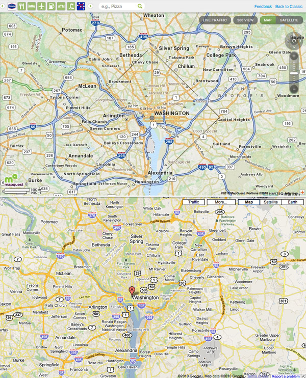
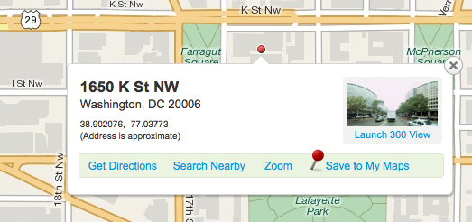

Remember when MapQuest was the online map site? Then Google came along and rained on their parade in 2005 with their dynamic-loading AJAX secret sauce which enabled you to infinitely pan around the map. Ever since then, MapQuest has been dead to me – until now.
The AOL-owned site unveiled their new look today and it is a complete revamp. Their logo took a turn from a comic typeface to a more serious, sans-serif one. Reddish-marroon, out! Green and purple, in! The new branding will certainly take some time but there is more to this re-launch than a new log0.
MapQuest has made their maps look more like paper maps. Well what do I mean by that? The color choices by the MapQuest team are really spot on. You might not really think about it, but the distinct colors used by MapQuest make their maps easier to read. Major interstate highways are blue, secondary highways are an orange color, and streets are yellow. This visual hierarchy of most important roads to least important helps focus your attention as your looking around. Compare this to Google Maps where the colors are so similiar that the roads kind of blend together.
The label style on Google Maps is a bit easier to read than MapQuest as I think Google Maps is better for locating city names and MapQuest is geared more towards a visual search of a map. For a more in-depth analysis about map design, see A Brief Comparison of Google Maps, Bing Maps, & Yahoo! Maps by 41Latitude.

The new MapQuest layout is akin to Google Maps with two-thirds of the screen dedicated to the map and the left third of the page for search and directions. Along the top of the map is a carousel navigation featuring groupings of locations like grocery stores, bars, and gas stations. It’s a well done interface for finding nearby attractions on the map.
Most people stick with MapQuest because they trust their directions over others. After a couple of test searches, I prefer the directions from Google better. But MapQuest is more enjoyable to just browse around. One feature MapQuest did really well is right clicking anywhere on the map will bring up the address of that location. Sure the address is an approximation, but the map bubble that pops up gives the house number, street, city, and zip. Sometimes there is even a 360 degree view just like Google’s Street view. MapQuest’s street view feature is more basic but I find it more intuitive to pan around. It doesn’t take up the whole screen and its easy to just pop in, pop out and continue on your way.

Will I’ll drop Google Maps and make MapQuest my dedicated online mapping service? Probably not. Google Maps has too many extra features for a power user like me (auto complete, public transportation, scroll wheel to zoom in/out). But for those people that feel Google Maps is too complicated and hard to use MapQuest provides a clean, easy to use mapping site that is geared for people like them. I would easily recommend MapQuest to an average computer user while Google is for people who want more features.
The more competition the better for all of us. MapQuest has certainly stepped up it’s game and I can’t wait to see what else they have in store.


{kind=link}
{kind=link}